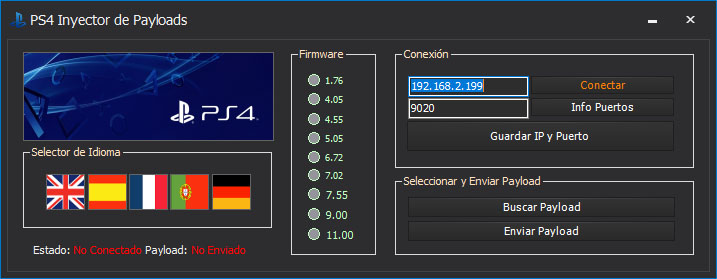

Linux en PS4
Podemos cargar Linux en nuestra consola PS4 para poder jugar juegos de PC, emuladores y mas
Para esta Guia
Requisitos para este tutorial
- USB en formato ExFAT
- Teclado y Mouse
Programas para este Tutorial
Archivos Para descargar
| Archivos | Servidores | |
|---|---|---|
| ps4gentoo Mega | Mega | |
| ps4gentoo Mediafire | github.com | |
| Payload Injector | Mega | |
| WEB Oficial | github.com | |
Empezando este Tutorial
- Conectamos nuestro USB o Disco a nuestro Computador
- Dentro verificamos el Formato del Disco para esto le damos clip derecho sobre el Disco y le damos en propiedades
- Y tiene que estar en NTFS nuestro USB o Disco esto es muy importante
- Podemos usar MiniTool Partition Wizard para verificar si nuestro Disco se encuentra en MBR
- Si estuviera en GPT le damos clip derecho y en Reconstruir de GPT a MBR
- Le damos a clip derecho y buscamos Formatear
- Y lo dejamos en FAT32 y le damos a aceptar y Aplicar
- Y listo
- Ahora vamos a instalar la imagen ps4gentoo01-2020.img
- Para esto usaremos la aplicación Rufus para la creación del USB
- Si no nos detecta el Disco externo le damos a la casilla Listar los discos duros USB
- Seleccionamos la imagen ps4gentoo01-2020.img que descargamos
- Una vez terminado podemos cerrar todo
- En nuestra consola PS4
- Lanzamos el GoldHen y buscamos en nuestra página de confianza
- Vamos al navegador de internet de nuestra consola PS4 y buscamos
- Mi Hot
https://marchelobm.github.io/ - Karo
https://karo218.ir - Podemos cargar el Linux 1GB hasta Linux 5Gb solo hay que probar se recomienda de 1 GB para empezar
- Si nos funciona podemos activar MiraLoader y después Linux 1GB para probar
- Desde nuestro PC
- En nuestra consola activamos en Ajustes/GoldHEN
- Enable BinLoader Server
- Si queremos hacerlo desde el pc buscamos PS4 Payload Injector Tool 
- Seleccionamos el Firmware de nuestra consola
- Seleccionamos la Conexión colocamos la IP de nuestra consola PS4 y el puerto 9020
- Conectamos con el botón Conectar
- Después buscamos el Payload MiraLoader y lo enviamos a nuestra consola y después LinuxLoader
- La consola se quedará en negro solo hay que esperar
- Podemos cambiar el idioma
- Conectar al Wifi si no la tenemos por cable LAN
- Dentro de Linux
- Para ampliar el disco vamos a toda su capacidad vamos a buscar GParted
- Si nos pide contraseña es ps4
- Buscamos el sdb que contiene el Linux abrimos el que está en ext4 y redimensionamos todo lo fata por agregar
- Y le damos a aplicar y a esperar que se aplique los cambios
- Y Listo

×